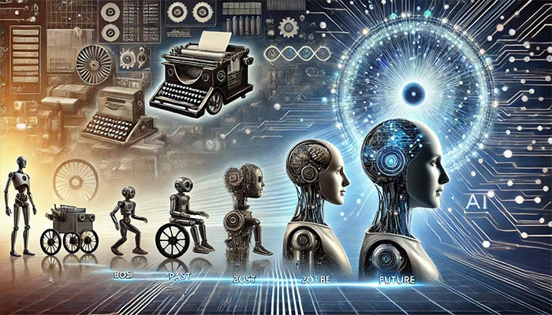

Inteligência Artificial transforma a saúde mundial
IA revoluciona diagnósticos e tratamentos, mas levanta questões éticas A inteligência artificial está se tornando uma aliada indispensável na área da saúde. Algoritmos avançados auxiliam médicos na detecção precoce de doenças e na personalização de tratamentos, permitindo diagnósticos mais rápidos e precisos.
Hospitais de ponta já utilizam sistemas de IA para interpretar exames de imagem, prever complicações em pacientes e até apoiar procedimentos cirúrgicos delicados. Contudo, especialistas ressaltam a importância de regulamentações para garantir privacidade e segurança dos dados.